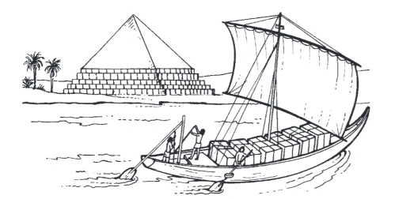
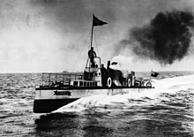
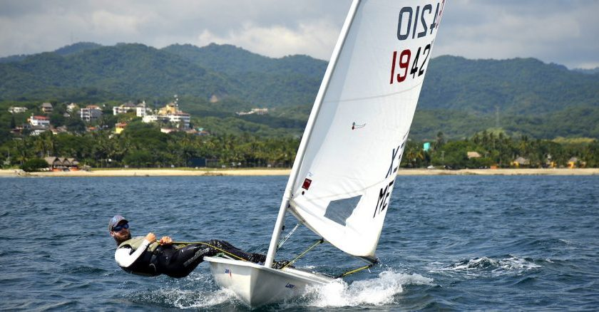

Vela Ligera
La vela ligera es un deporte náutico que se efectua con veleros con orzas y timones desmontables. Los veleros no cuentan con ningún tipo de propulsión. Las regatas suelesn ser cerca de la costa.
El organismo de gestión de este deporte es la Federación Intenacional de Vela (ISAF) conjuntamente con el Comite Olímpico Internacional (COI).
1 Reseña Histórica
1.1 Náutica
Para poder entender la vela ligera también es importante comprender la história de la Náutica:
Como bien ha sido estudiado, el origen del ser humano se encuentra en el continente Africano. En nuestro afán de poblar y el mundo, hemos atravesado bosques, escalados montañas y cruzado ríos, mares y oceanos. Sin embargo, para poder cruzar las aguas los seres humanos nos valímos de los troncos de los árboles. Ésto aparte de demostrar el ingenio del hombre prehistorico, es también el origen de la náutica. Una técnica que ha evolucionado mucho con el paso del tiempo.
El primer barco ya funcional, era de madera y ya contaba con remos y velas; la teoría más extendida dice que fue creado por las civilizaciones orientales cerca del año 3000. Su principal utilidad fue el transporte de materiales, como por ejemplo troncos y pirámides para la construcción de las pirámides Egipcios. Paralelamente ha esto los Fenicios fueron los primeros en emplear la construcción naval para la exploración marítima y para el comercio.

A partir del 1700 los veleros se empezaron a utilizar como herramiente para el comercio internacional y para los combates navales. Finalmente en el siglo XIX con la 2ª revolución industrial, los barcos pasaron a ser de vapor. Finalmente a principios del siglo XX aparecieron los barcos de carga y los cruceros

1.2 Vela ligera
No esta muy claro quien fue el primero en hacer competiciones de vela ligera. Sin embargo, fueron popularizadas por Carlos II de Inglaterra. En 1887 un letrado dublines definió el concepto de clase. Él deseaba que las competiciones fuesen para medir la habilidad de los patrones en embarcaciones construidas con el mismo diseño. De ahí en adelante la idea de competir por categorias se generalizó. Finalmente la ISAF fue fundada en 1907 por 13 naciones europeas.
2 Beneficios Orgánicos y Psicológicos
2.1 Beneficios Orgánicos
Mejora de la coordinación físico-visual: en la vela ligera has de ser capaz de dirigir el barco sin mirar al timón, además el minimo error en días de mucho viento, pude hacer que la embarcación vuelque
Mejora del equilibrio: para que un velero alcance su máxima velocidad ha de escorado (inclinado), lo cual obliga al conductor ha tener que contrarrestar la fuerza de la vela con su propio cuerpo
Mejora de la elasticidad: para evitar que el barco ceda a la fuerza del viento, muchas veces hay que estirarse hacía fuera del barco

- Fortalecimiento de los músculos del tren tren inferior y superior: el tren inferior es utilizado para mantener el barco recto y el tren superior para cazar vela(mover la vela que cerrar el ángulo que conforman la vela y el eje central del barco) y amollar (mover la vela para abrir el ángulo que conforman con ela vela y el eje central del barco)
- Agilidad: Cuando se realiza una virada (cambiar la vela de lado apuntando con el timon hacia la vela) o se traslucha (cambiar la vela de lado apuntando con el timon hacia el lado contrario de la vela), hay que cambiar rapidamente de lado, lo cual en muchas disciplinas implica: cambiar el timón de mano y cambiar las velas de posición. Todo esto sin dejar de mirar hacía delante y agachandose para que la botavara (palo central horizonatal, que va pegado a la vela) pase por encima nuestra.ç
2.2 Psicológicos
- Mejora de la Concentración: los regatistas han de tener presente muchas cosas para hacer que el barco funcione de la mejor forma posible
- Mejora las relaciones con otras personas: si es una categoria de equipo, al pasar tanto tiempo en un espacio tan pequeño estais más obligados a comunicaros mas
3 Valoración
· Webgrafía (Enlace a otra página)